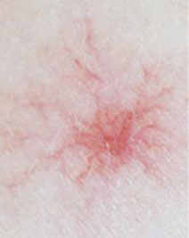

什么是肝炎？
什么是肝炎?
肝炎是由多种肝炎病毒引起的常见传染病，具有传染性强、传播途径复杂、流行面广泛，发病率较高等特点，肝炎病毒通常分为甲、乙、丙、丁、戊型。以疲乏、食欲减退、肝肿大、肝功能异常为主要表现，部分出现黄疸，无症状感染常见。
肝炎的现状
肝炎的现状
我国是肝炎的高发地区，发病率高。近几年我国报告肝炎病例年均130万以上，位居传染病发病前三位，其中乙肝占所有肝炎病例的3/4。因此，防治肝炎关系到千家万户的利益。
肝炎的症状有哪些？
1、食欲减退，恶心呕吐
肝炎早期，患者会出现食欲减退，消化功能差，进食后腹胀，没有饥饿感；厌吃油腻食物，如果进食便会引起恶心、呕吐，活动后易感疲倦等症状。其原因是：得了肝炎，肝细胞要肿胀、坏死，吃进的食物不能正常"加工"以及肝脏分泌和产生胆汁的功能减弱，不能正常地消化脂肪等引起的。尤其是黄疽型肝炎病人表现更严重。
2、疲乏无力
疲乏无力是是早期黄疸型肝炎症状表现之一。病人往往说不清楚何时起病，其表现也不相同，轻者不爱活动，重者卧床不起。尽管经充分休息，疲劳感仍不能消除，严重者好像四肢与身体分离似的。其原因是由于病人食欲不振，消化吸收障碍，导致人体能量不足。
3、"三黄"症状：尿黄、皮肤黄、眼睛黄
黄疸型肝炎病人都有尿黄的症状，因此，尿黄如此也是黄疸型肝炎症状表现。初起尿色淡黄，逐日加深，浓如茶色或豆油状；继而皮肤及巩膜发黄。正常情况下，人体的红细胞寿命是120天，被破坏的红细胞会放出血红蛋白，经过一系列的分解代谢，变成黄色物质叫胆红素。
4、持续发热
急性黄疽型肝炎早期常有发热，多在37.5－38.5摄氏度，高热者少见，一般持续3－5天。

5、出血症状
患者身体有出血的倾向，患者的皮肤可能会出现瘀斑、牙龈出血以及流鼻血等症状。这是由于患者体内的血小板降低，凝血原子减少，有些患者甚至还会出现消化道出血症状。
6、肝区疼痛
肝炎患者肝区痛，涉及右上腹或右背部，疼痛程度不一，有的胀痛、钝痛或针刺样痛，活动时加剧，且时间不一,有时左侧卧位时疼痛减轻。其原因是：肝脏的神经分布在肝脏外面的肝包膜，肝炎时肝脏肿大、肝包膜与炎症组织发生粘连，所以出现肝区疼痛，在劳累后更加明显。

7、蜘蛛痣和肝掌症状
蜘蛛痣是一种特殊的毛细血管扩张症，多出现于面部、颈部及胸部，亦有其他部位出现者。肝掌为慢性肝炎、肝硬化的重要标志之一。
肝炎的危害有哪些？
危害一：会形成肝硬化、肝癌
肝病专家表示：重症肝炎病死率很高，可达60%-70%，即使恢复，也往往发展为肝硬化。最新数据表明，乙肝和丙肝的危害性很大，有相当一部分病人由慢性肝炎演变为肝硬化和肝癌。
危害二：会导致周围组织并发症
现已证实，肝炎病毒可侵犯其他器官，即是肝外组织的并发症，如关节炎，肾小球炎，结节性多动脉炎等，较少见的有糖尿病，脂肪肝，再生障碍性贫血，多发性神经炎，胸膜炎，心肌炎和心包炎等。发生肝外并发症以乙型肝炎多见。
危害三：会严重伤害患者的心理
肝炎不仅对患者的身体甚至生命造成危害，而且对患者心理上的打击也是十分沉重的。无论是肝炎患者还是病毒携带者，在生活、社交、求职、升学等方面都会受到严重影响，由此改变一生的命运，这样的例子实在是不胜枚举。
危害四、传染性强
病毒性肝炎是主要的肝炎类型，肝炎病毒通过被污染的水和食物、血液和母婴等方式传播，一人感染肝炎会传染给其他人，导致了肝炎的家族性聚集，发病率高。
得了肝炎怎么办？
肝炎治疗领域的诺贝尔奖--"DC细胞-生物免疫疗法"
DC细胞-生物免疫疗法针对肝炎患者自身感染病毒的类型，不用药物，无需手术，实现了真正的个性化治疗。该技术是目前公认的最具应用前景的高科技生物治疗技术，获得了世界卫生组织的认定和推荐，成为肝炎治疗首选方案。
优势1、疗程短、见效快：
一般治疗1至2个疗程就可以见到明显
效果；
优势2、随治随走、方便快捷：
一般患者无需住院，减少治疗费用，方
便快捷；
优势3、安全有效、无副作用：
用自己的细胞治自己的病，安全有效；
优势4、无菌实验室，0感染：
整个治疗过程在无菌实验室内进行，
感染率为零；
优势5、永不复发：
免疫细胞在体内能够长年存活，一旦
康复就不再复发；
优势6、适用人群广泛：
适用年龄在16周岁-60周岁之间的肝
炎患者。
肝病专家推荐
教授、博士生导师
上海新科医院肝病科主任
美国医师协会ACP副会长
国际肝病防治委员会首席专家
原浙江奉化疾控中心主任
原解放军102医院传染科主任
DC生物免疫系统技术临床诊疗领导者
丁祥云，出生于医学世家。2002年-2010年在美国耶鲁大学医学院进行学术交流，前后多次应邀参加国内外肝病学术交流会，其发表的诸多学术论文及临床研究文献已经被《中国名医特医名录》、《中国世纪专家》所收录。是我国肝病领域不可或缺的重要人物。
从事肝病临床工作四十多年，对乙肝、大三阳、小三阳、丙肝、脂肪肝、肝硬化、肝纤维化等各种肝病的治疗都有显著疗效，受到患者的一致好评
康复案例
"DC细胞-生物免疫疗法"把我的肝炎治好了!
患者资料：洪七杰，浙江人，感染肝炎1年半
【病史】我叫洪七杰（化名），浙江人，现在在上海长宁区工作，突然一天我感觉肚子上边肝区疼痛，胀痛，呼吸也不畅快，身体像被抽了骨头，一点劲儿也没有。到医院检查，医生说我这乙型肝炎正在活跃期。我先后跑了多家大医院，但是效果都不理想。
【治疗】后来，听说一个远房亲戚的肝炎在上海新科医院肝病科治愈了。就抱着试试看的心情，来到了医院。医院给我的第一印象就是窗明几净、服务台的护士挂着甜甜的笑容，如沐春风，接诊我的是肝病科主任丁祥云教授。根据我的病情，她决定用"DC细胞--生物免疫疗法"给我治疗。在医院里面住了三个多月，很突然的做了一次检查，然后丁祥云教授告诉我，可以出院了！
肝炎母亲：感谢新科，让我可以生宝宝了
患者资料：小李，上海人，感染肝炎大三阳4年
【病史】四年前，大学刚毕业的小李与深爱的男友结婚了，这桩看来平凡又幸福的婚姻下，承载的是小李对男友深深的爱和无尽的感激――除了老公！没有人知道，她是一个肝炎大三阳患者！为了防止孩子染病，在第3次怀孕也被丈夫强烈要求做掉后，小李真的绝望了！
【治疗】后来在丈夫的陪同下，走进了上海新科医院肝病科接受治疗。丁祥云教授根据她的具体情况，决定采用"DC细胞-生物免疫疗法"治疗。经过６个月的治疗，患者体内的肝病病毒复制得到控制，传染性由强转弱，病毒对患者肝脏造成的危害已相对大大降低，由于小李身体各项指标好转，专家建议其可以通过母婴阻断，孕育出一个健康宝宝！
那场肝炎伴随的青春，我没有虚度
患者资料：小刘，学生，江苏人，感染肝炎半年
【病史】人生多有不如意之时，在高考前的体检中，我被查出了患者有肝炎小三阳，就这样，我与高考擦肩而过。
【治疗】一次上网，无意中进入了上海新科医院肝病科的网站，看见网站上肝病的介绍及治疗方法，就抱着试试看的态度找到了那里，经与专家当面交流，又做了一次肝炎两对半检查，医生决定为我采用"DC细胞-生物免疫疗法"治疗，一个疗程后，身体不舒适症状没有了，肝功能恢复正常，转氨霉、血清胆红素达到标准值，二个疗程后，身体各项指标都恢复正常。此后，我又坚持在医生指导下用了半年药，后经复查，肝炎小三阳转阴了。